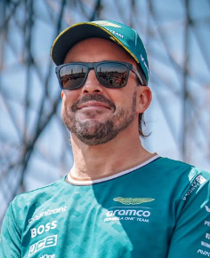

Fernando Alonso
Fernando Alonso
Team: Aston Martin
Team Principal: Mike Krack
Number: 14
Nationality: Spain
Debut: 2001
Born: 29 July 1981
History: Spanish driver Fernando Alonso is considered one of the most complete and intelligent racers in Formula 1 history. A two-time World Champion, Alonso built his reputation through exceptional racecraft, strategic awareness, and the ability to outperform the machinery available to him. After returning to Formula 1 with Alpine and later Aston Martin, he continued competing at an elite level well into his forties, demonstrating remarkable longevity and motivation. By 2026, Alonso remained one of the most respected figures in the paddock and a key leader within Aston Martin’s ambitious long-term project.
